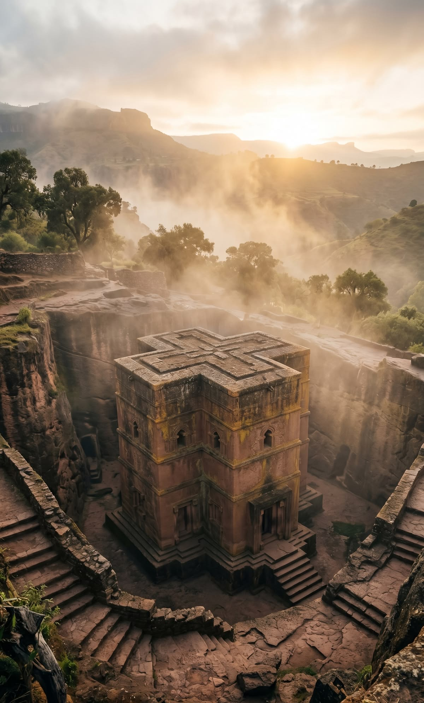
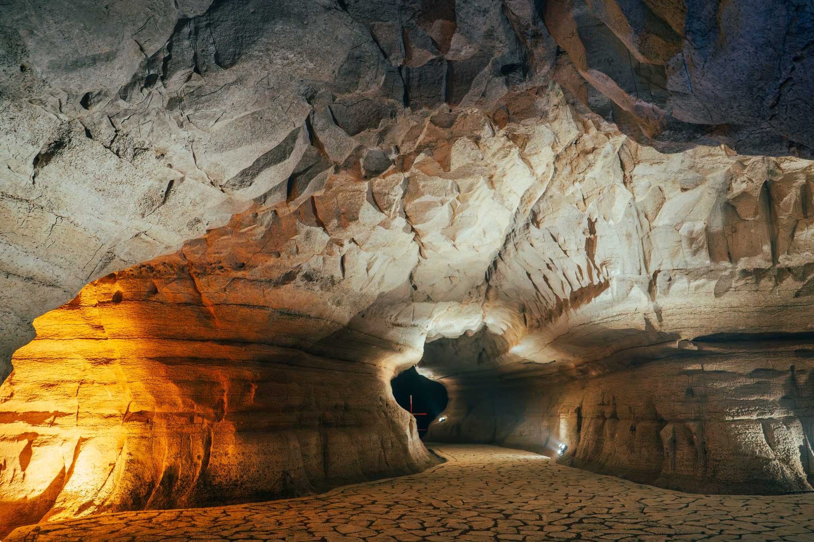
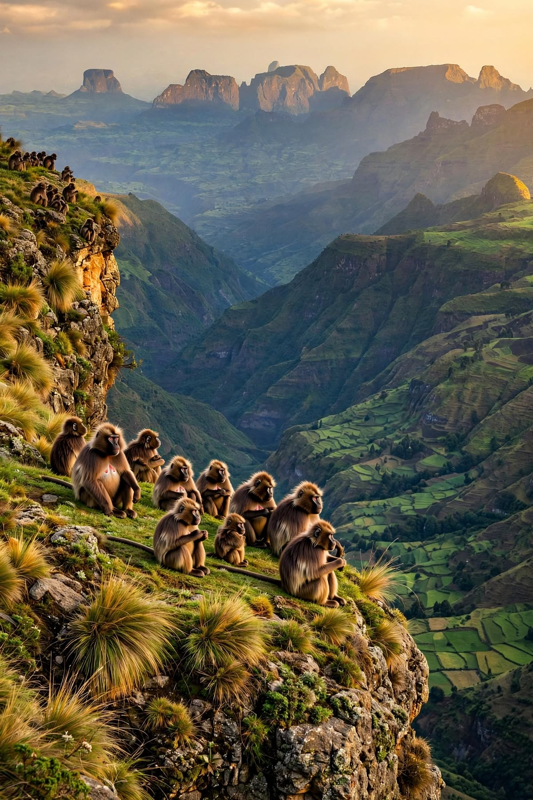

Discover the beauty, culture and history of Ethiopia.
Ethiopia is a beautiful country with many historical places, mountains and cultural attractions. Explore some of the most popular destinations in Ethiopia.

Lalibela is famous for its historical rock-hewn churches. It is one of the most popular tourist destination in Ethiopia.

Sof Omar Cave is one of the largest and most beautiful natural cave systems in Ethiopia.

The Simien Mountains are known for their stunning landscapes and unique wildlife. They are a UNESCO World Heritage site and a popular destination for trekking and adventure.
Ethiopia offers a wide range of accommodation options for tourists, from luxury hotels to budget-friendly guesthouses. Visitors can choose from a variety of options based on their preferences and budget.
| Accommodation | Type | Price per Night |
|---|---|---|
| Luxury Hotel | Luxury | $80 - $150 |
| Mid-range Hotel | Mid-range | $50 - $80 |
| Budget Guesthouse | Budget | $20 - $50 |